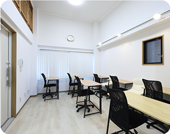
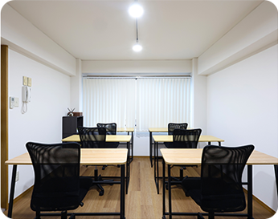
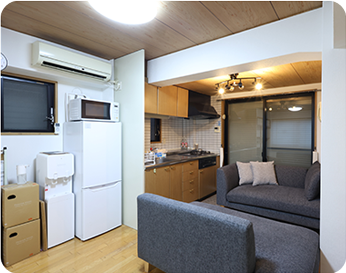
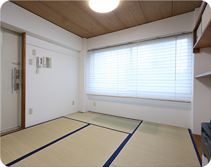
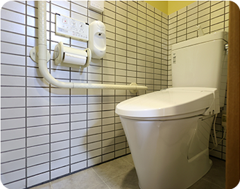
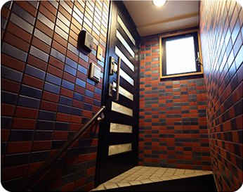
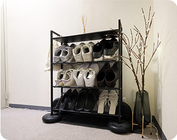

ACCESS
教室案内
- HOME
- 教室案内
施設概要
- 所在地
- 〒464-0000 愛知県名古屋市千種区〇〇1-2-3
- 電話番号
- 052-000-0000
- 受付時間
- 平日16:00〜22:00
- 休校日
- 日曜・祝日、夏季休業・年末年始
-

教室1 -

教室2 -

面談スペース -

教室3 -

トイレ -

入口 -

玄関
アクセス
駅からの来かた
- 1
地下鉄東山線「〇〇駅」〇番出口を出て、直進します。
- 2
2つ目の信号を右折し、〇〇通りを道なりに進みます。
- 3
徒歩約〇分、右手に見える建物の2階が教室です。
バスをご利用の場合は「〇〇」バス停から徒歩約〇分です。